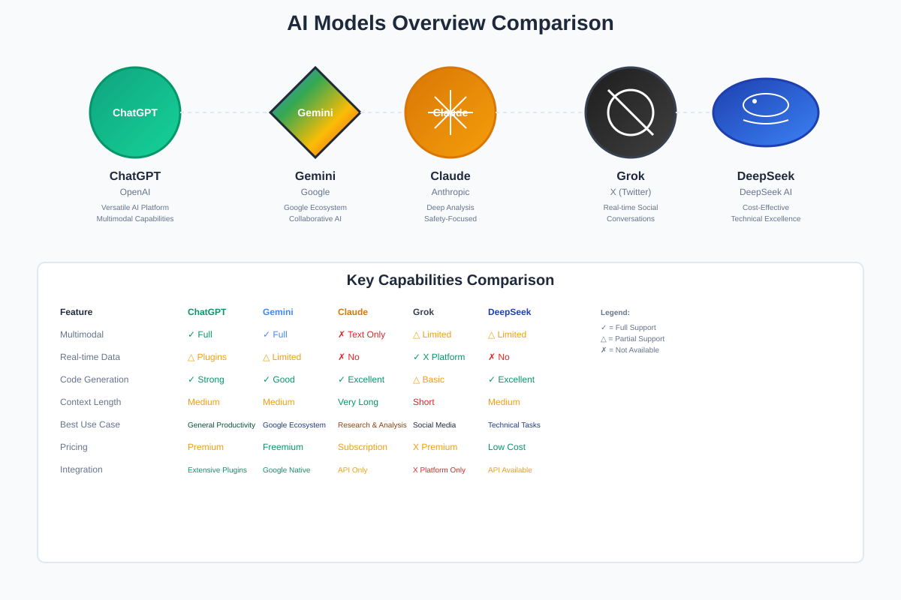
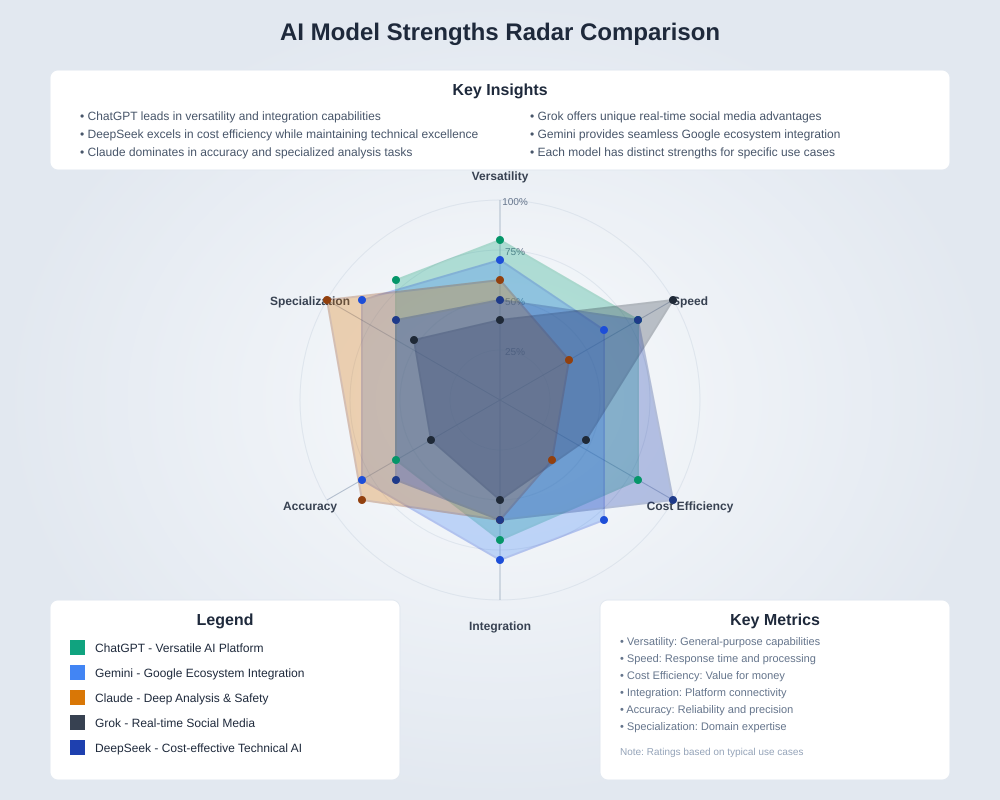
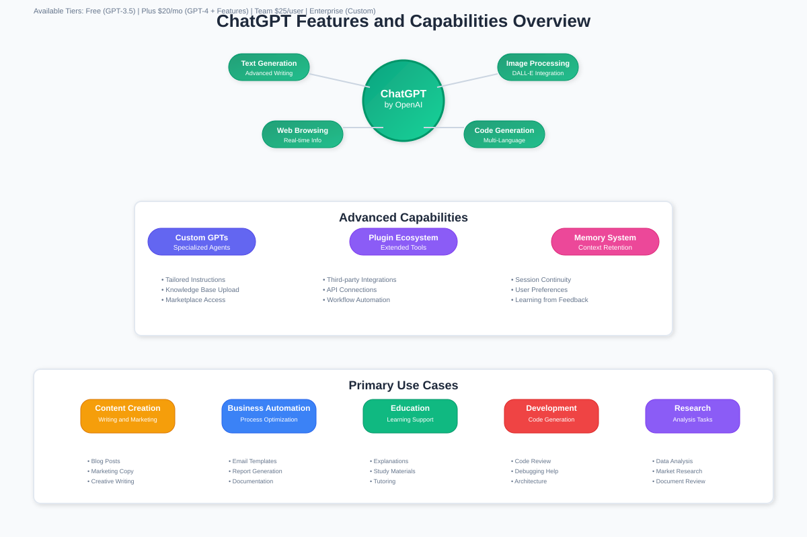
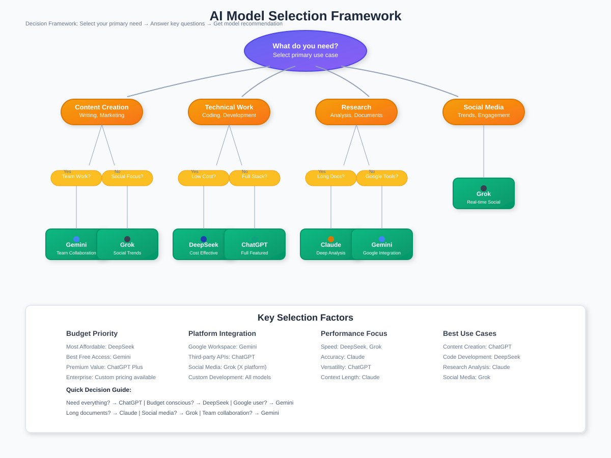

AI Models Comparison Guide: ChatGPT vs Gemini vs Claude vs Grok vs DeepSeek
🧭 Quick Navigation
- Overview
- Model Comparison Matrix
- Detailed Model Analysis
- ChatGPT (OpenAI)
- Gemini (Google)
- Claude (Anthropic)
- Grok (X/Twitter)
- DeepSeek
- Use Case Decision Framework
- Performance Comparison
- Integration Capabilities
- Cost Analysis
- Getting Started
- References & Further Reading
🎯 Overview
The landscape of AI language models has evolved rapidly, with five major platforms emerging as leaders in different domains. Each model offers unique strengths, integration capabilities, and optimization for specific use cases. This comprehensive guide provides detailed comparisons to help you choose the right AI model for your specific needs.

Key Differentiators
Ecosystem Integration: Models vary significantly in their integration with existing platforms and services, from Google's deep Workspace integration to X's real-time social media data access.
Specialization Focus: Each model targets different primary use cases - from ChatGPT's versatility to Claude's analytical depth and Grok's social media optimization.
Performance Characteristics: Models differ in processing speed, context length, multimodal capabilities, and reasoning depth.
📊 Model Comparison Matrix
| Feature | ChatGPT | Gemini | Claude | Grok | DeepSeek |
|---|---|---|---|---|---|
| Developer | OpenAI | Anthropic | X (Twitter) | DeepSeek | |
| Primary Strength | Versatility | Integration | Deep Analysis | Real-time Social | Cost-Effectiveness |
| Best For | General Productivity | Google Ecosystem | Research & Analysis | Social Media | Technical Tasks |
| Multimodal | ✅ Full Support | ✅ Full Support | ❌ Text Only | ⚠️ Limited | ⚠️ Limited |
| Real-time Data | ⚠️ Via Plugins | ⚠️ Limited | ❌ No | ✅ X Platform | ❌ No |
| Context Length | Medium | Medium | Very Long | Short | Medium |
| Pricing | Premium | Freemium | Subscription | X Premium | Low Cost |
| Code Generation | ✅ Strong | ✅ Good | ✅ Excellent | ⚠️ Basic | ✅ Excellent |
AI Models Comprehensive Comparison: ChatGPT vs Gemini vs Claude vs Grok vs DeepSeek
🔍 Quick Reference Grid
| Aspect | ChatGPT | Gemini | Claude | Grok | DeepSeek |
|---|---|---|---|---|---|
| Developer | OpenAI | Anthropic | X (Twitter) | DeepSeek AI | |
| Release Year | 2022 | 2023 | 2022 | 2023 | 2023 |
| Primary Strength | Versatility & Plugins | Google Integration | Safety & Analysis | Real-time Social | Cost Efficiency |
📋 Core Descriptions
| Model | Description | Key Philosophy |
|---|---|---|
| ChatGPT | A versatile generative AI platform for text, images, video, and code generation with web browsing. Designed for productivity and creative applications. | Versatility and user empowerment through customization |
| Gemini | Google's AI integrated with Gmail, Google Sheets, and Search. Built for collaboration and multimodal input/output within the Google ecosystem. | Seamless integration and collaborative intelligence |
| Claude | Anthropic's AI designed for deep reasoning, content safety, and processing long contexts. Focuses on helpful, harmless, and honest interactions. | Constitutional AI and safety-first approach |
| Grok | X's AI chatbot powered by real-time social media content. Built for speed, wit, and real-time conversational AI with contemporary relevance. | Real-time awareness and conversational wit |
| DeepSeek | A Chinese-developed AI optimized for speed, affordability, and technical workloads. Focuses on cost-effective high-performance computing. | Technical excellence and cost optimization |
🎯 When to Use Each Model
| ChatGPT | Gemini | Claude | Grok | DeepSeek |
|---|---|---|---|---|
| • Diverse multimodal capabilities needed | • Work within Google ecosystem | • Legal, academic, or policy analysis work | • Active engagement on X platform | • High-performance AI at lower costs |
| • Memory enhancement tasks | • Collaborative multimodal input/output | • Long-form content requiring safety/defensibility | • Tracking live trends and breaking news | • Multilingual applications and diverse language tasks |
| • Plugin integrations required | • Handling presentations, documents, and datasets | • High-stakes work requiring defensibility | • Quick, witty conversational AI | • Intensive technical and analytical workloads |
| • Creative workflow optimization | • Team collaboration across Google tools | • Processing extensive documentation | • Real-time social media insights | • Budget-conscious technical projects |
💼 Primary Use Cases
| Category | ChatGPT | Gemini | Claude | Grok | DeepSeek |
|---|---|---|---|---|---|
| Content Creation | • Reports, campaigns, presentations • Custom GPTs for specialized content • Multimedia content generation |
• Collaborative presentations • Email threads with attachments • Visual content within Google tools |
• Research paper summaries • Legal document analysis • Policy documentation |
• Social media content • Trending topic analysis • Viral content creation |
• Technical documentation • Multilingual content • Large-scale content processing |
| Business Operations | • Email automation and summaries • Process documentation • Custom business workflows |
• Team collaboration in Workspace • Data visualization in Sheets • Integrated business processes |
• Contract analysis • Compliance documentation • Risk assessment reports |
• Social media monitoring • Brand sentiment analysis • Real-time market insights |
• Cost-effective automation • Technical system documentation • Large-scale data processing |
| Development | • Full-stack development support • Code generation and debugging • Architecture design guidance |
• Collaborative development in Google Cloud • Integration with Google services • Team-based coding projects |
• Code review and analysis • Technical documentation • Security-focused development |
• Quick prototyping • Social platform integrations • Real-time data processing |
• High-performance coding • Complex algorithm development • Cost-optimized technical solutions |
💪 Key Strengths
| ChatGPT | Gemini | Claude | Grok | DeepSeek |
|---|---|---|---|---|
| • Versatility: Handles diverse tasks across domains | • Integration: Deep Google Workspace connectivity | • Safety: Constitutional AI principles | • Speed: Real-time data processing | • Efficiency: Cost-effective performance |
| • Customization: Custom GPT creation and plugins | • Collaboration: Seamless team workflows | • Analysis: Superior reasoning for complex topics | • Relevance: Current social media awareness | • Technical Depth: Strong coding and technical capabilities |
| • Ecosystem: Extensive third-party integrations | • Multimodal: Strong handling of mixed content types | • Context: Extended context window for long documents | • Engagement: Witty, conversational personality | • Scalability: Handles large-scale workloads efficiently |
| • Innovation: Regular feature updates and improvements | • Accessibility: Familiar Google interface | • Reliability: Consistent, thoughtful responses | • Timeliness: Up-to-date information from X platform | • Global Reach: Strong multilingual capabilities |
⚠️ Key Weaknesses
| ChatGPT | Gemini | Claude | Grok | DeepSeek |
|---|---|---|---|---|
| • Cost: Premium features require subscription | • Limitation: Some features still experimental | • Restrictions: Limited multimodal capabilities | • Scope: Limited outside X ecosystem | • Ecosystem: Smaller community and integrations |
| • Accuracy: May require fact-checking for critical use | • Dependency: Best performance within Google ecosystem | • Speed: More deliberate, sometimes slower responses | • Depth: Not optimized for technical research | • Recognition: Less established in Western markets |
| • Consistency: Output quality can vary | • Polish: Interface consistency varies across Google services | • Tone: Can be overly cautious or conservative | • Professional Use: May not align with formal communication | • Documentation: Limited English resources |
| • Data Currency: Knowledge cutoffs may affect accuracy | • Access: Limited third-party platform integrations | • Creative Freedom: Safety measures may limit creative output | • Analysis: Limited deep analytical capabilities | • Enterprise Features: Fewer enterprise-specific features |
🚀 Pro Tips
| ChatGPT | Gemini | Claude | Grok | DeepSeek |
|---|---|---|---|---|
| Create custom GPTs to match your specific workflows or personal needs. Upload relevant documents and define clear instructions for specialized assistance. | Use Gemini to unify Gmail, Docs, Sheets, and Slides into one streamlined AI workflow for maximum productivity. | Use Claude to carefully analyze complex documents with highly detailed, precise instructions for best results. | Use Grok to quickly create viral posts and stay ahead on real-time updates and social trends. | Use DeepSeek to handle large-scale workloads efficiently without overspending on AI costs. |
📊 Extended Classification Matrix
💰 Pricing Structure
| Model | Free Tier | Paid Plans | Enterprise | API Pricing |
|---|---|---|---|---|
| ChatGPT | Limited GPT-5 access | Plus: $20/mo, Team: $25/user | Custom pricing | Pay-per-token |
| Gemini | Basic features with Google account | Workspace integration | Google Cloud pricing | Pay-per-use through Google Cloud |
| Claude | Limited daily usage | Pro: $20/mo | Custom enterprise solutions | Competitive pay-per-token |
| Grok | Requires X Premium ($8/mo) | X Premium+: $16/mo | Business tier available | Limited API access |
| DeepSeek | Generous free tier | Competitive monthly rates | Cost-effective enterprise | Significantly lower per-token costs |
🔧 Technical Specifications
| Feature | ChatGPT | Gemini | Claude | Grok | DeepSeek |
|---|---|---|---|---|---|
| Context Length | 32K-128K tokens | 1M tokens | 200K tokens | 8K tokens | 64K tokens |
| Multimodal | ✅ Text, Image, Audio, Video | ✅ Text, Image, Audio | ❌ Text only | ⚠️ Limited | ⚠️ Limited |
| Real-time Data | ⚠️ Via plugins | ⚠️ Limited Google integration | ❌ No | ✅ X platform data | ❌ No |
| API Access | ✅ Comprehensive | ✅ Google Cloud | ✅ Available | ⚠️ Limited | ✅ Available |
| Code Execution | ✅ Advanced interpreter | ✅ In Google Colab | ❌ Analysis only | ❌ No | ✅ Available |
🌐 Integration Capabilities
| Platform | ChatGPT | Gemini | Claude | Grok | DeepSeek |
|---|---|---|---|---|---|
| Google Workspace | ⚠️ Third-party plugins | ✅ Native integration | ❌ No direct integration | ❌ No | ❌ No |
| Microsoft 365 | ✅ Via plugins/API | ⚠️ Limited | ⚠️ Via API | ❌ No | ⚠️ Via API |
| Social Media | ⚠️ Via plugins | ⚠️ Limited | ❌ No | ✅ X platform native | ❌ No |
| Development Tools | ✅ Extensive ecosystem | ✅ Google Cloud tools | ⚠️ Limited | ❌ No | ✅ Good support |
| Enterprise Systems | ✅ API integrations | ✅ Google enterprise | ✅ Enterprise API | ⚠️ Limited | ⚠️ Growing |
🛡️ Security & Privacy
| Aspect | ChatGPT | Gemini | Claude | Grok | DeepSeek |
|---|---|---|---|---|---|
| Data Privacy | SOC 2 compliant | Google's privacy standards | Strong privacy focus | X platform integration | Regional data regulations |
| Enterprise Security | ✅ Business/Enterprise tiers | ✅ Google Cloud security | ✅ Enterprise features | ⚠️ Limited enterprise | ⚠️ Developing |
| Data Retention | Configurable | Google's data policies | User-controlled | X platform policies | Competitive policies |
| Compliance | GDPR, SOC 2 | Google compliance standards | Constitutional AI approach | Platform-dependent | Regional compliance |
📈 Performance Metrics
| Metric | ChatGPT | Gemini | Claude | Grok | DeepSeek |
|---|---|---|---|---|---|
| Response Speed | ⭐⭐⭐ | ⭐⭐⭐⭐ | ⭐⭐⭐ | ⭐⭐⭐⭐⭐ | ⭐⭐⭐⭐⭐ |
| Accuracy | ⭐⭐⭐⭐ | ⭐⭐⭐⭐ | ⭐⭐⭐⭐⭐ | ⭐⭐⭐ | ⭐⭐⭐⭐ |
| Creativity | ⭐⭐⭐⭐⭐ | ⭐⭐⭐⭐ | ⭐⭐⭐ | ⭐⭐⭐⭐ | ⭐⭐⭐ |
| Technical Depth | ⭐⭐⭐⭐ | ⭐⭐⭐ | ⭐⭐⭐⭐⭐ | ⭐⭐ | ⭐⭐⭐⭐⭐ |
| Cost Efficiency | ⭐⭐ | ⭐⭐⭐ | ⭐⭐⭐ | ⭐⭐⭐ | ⭐⭐⭐⭐⭐ |
🌍 Language & Regional Support
| Aspect | ChatGPT | Gemini | Claude | Grok | DeepSeek |
|---|---|---|---|---|---|
| Language Support | 50+ languages | 40+ languages | 20+ languages | Primarily English | 100+ languages |
| Regional Availability | Global (with restrictions) | Global via Google | Global | X platform regions | Global |
| Local Compliance | Regional adaptations | Google's regional compliance | Anthropic's policies | Platform-dependent | Strong Asian focus |
| Cultural Adaptation | Growing localization | Google's global approach | Western-centric | English/Western focus | Strong Chinese/Asian support |
🎯 Decision Matrix: Which Model for Which Need?
By Primary Use Case
| Use Case | First Choice | Alternative | Budget Option |
|---|---|---|---|
| Content Marketing | ChatGPT | Gemini | DeepSeek |
| Technical Development | DeepSeek | ChatGPT | Claude |
| Academic Research | Claude | ChatGPT | DeepSeek |
| Team Collaboration | Gemini | ChatGPT | Claude |
| Social Media Management | Grok | ChatGPT | DeepSeek |
| Document Analysis | Claude | ChatGPT | Gemini |
| Creative Projects | ChatGPT | Claude | DeepSeek |
| Real-time Information | Grok | ChatGPT (with plugins) | Gemini |
By Organization Size
| Organization Size | Recommended | Reasoning |
|---|---|---|
| Individual/Freelancer | ChatGPT or DeepSeek | Versatility (ChatGPT) or cost-effectiveness (DeepSeek) |
| Small Team (2-10) | Gemini or ChatGPT | Collaboration tools (Gemini) or customization (ChatGPT) |
| Medium Business (11-100) | ChatGPT Team or Gemini Workspace | Enterprise features with reasonable costs |
| Large Enterprise (100+) | Multi-model approach | Different models for different departments |
| Educational Institution | Claude or Gemini | Safety focus (Claude) or Google integration (Gemini) |
By Budget Considerations
| Budget Level | Recommended Strategy |
|---|---|
| Minimal Budget | DeepSeek + selective use of others' free tiers |
| Low Budget | Primary: DeepSeek, Secondary: Gemini free tier |
| Medium Budget | ChatGPT Plus + DeepSeek for high-volume tasks |
| High Budget | Multi-model approach with enterprise tiers |
| Enterprise Budget | All models for specialized use cases + custom implementations |
🔮 Future Outlook & Trends
| Model | Development Trajectory | Expected Improvements |
|---|---|---|
| ChatGPT | Expanding plugin ecosystem, improved reasoning | Better multimodal integration, faster response times |
| Gemini | Deeper Google integration, improved capabilities | Enhanced collaboration features, broader platform support |
| Claude | Focus on safety and reasoning improvements | Multimodal capabilities, maintained safety standards |
| Grok | Platform integration expansion, capability growth | Improved analytical depth, maintained real-time advantage |
| DeepSeek | Global expansion, enterprise features | Enhanced Western market presence, more integrations |
Last updated: Based on capabilities as of September 2024. AI models evolve rapidly, so verify current features and pricing before making decisions.

🔍 Detailed Model Analysis
ChatGPT (OpenAI)

📝 Description
ChatGPT represents OpenAI's flagship conversational AI platform, designed as a versatile generative AI tool supporting text, images, video, and code generation with web browsing capabilities. Built for both productivity enhancement and creative applications, it serves as a comprehensive AI assistant for diverse professional and personal tasks.
⚡ When to Use ChatGPT
- Diverse Multimodal Requirements: When projects require seamless switching between text, image, audio, and video processing
- Memory Enhancement Tasks: For applications requiring conversation history and context retention across sessions
- Plugin Integration Needs: When workflow optimization requires third-party tool integration
- Creative Work Support: Perfect for content creation, brainstorming, and iterative creative processes
- Workflow Optimization: When building custom automation and productivity enhancement systems
🎯 Primary Use Cases
- Content Creation: Generate reports, marketing campaigns, presentations, and multimedia content
- Custom GPT Development: Build specialized AI assistants tailored for specific business processes or personal workflows
- Communication Automation: Automate email responses, meeting summaries, and customer support interactions
- Educational Support: Create learning materials, explanations, and interactive educational content
- Code Development: Full-stack development support with debugging, optimization, and documentation
💪 Key Strengths
- Comprehensive Plugin Ecosystem: Built-in access to web browsing, image generation, audio processing, and video capabilities
- Cross-Platform Compatibility: Robust performance across different browsers and integration points
- Domain Adaptability: Exceptional flexibility across diverse industries and use cases
- Active Development: Continuous feature updates and capability expansions
- Community Support: Large user base with extensive documentation and community resources
⚠️ Notable Weaknesses
- Premium Feature Limitations: Most advanced capabilities require paid subscription tiers
- Accuracy Validation Needs: Generated content may require human verification for factual accuracy
- Cost Considerations: Higher operational costs for intensive use cases
- Information Currency: Knowledge cutoffs may affect real-time information accuracy
💡 Pro Tip
Create custom GPTs tailored to your specific workflow needs. Define clear instructions, upload relevant documents, and configure specific behaviors to transform ChatGPT into a specialized assistant for your industry or role.
Gemini (Google)
📝 Description
Google's Gemini represents a deeply integrated AI solution built specifically for the Google ecosystem, encompassing Gmail, Google Docs, Sheets, and Search. Designed with multimodal collaboration at its core, Gemini excels in productivity workflows that leverage Google's comprehensive suite of tools and services.
⚡ When to Use Gemini
- Google Ecosystem Workflows: When your organization primarily operates within Google Workspace
- Multimodal Input/Output Needs: For projects requiring seamless handling of text, images, and data formats
- Collaborative Presentations: When creating visually rich content requiring real-time team collaboration
- Data Integration Tasks: For workflows involving Google Sheets analysis and Google Drive document processing
🎯 Primary Use Cases
- Email and Document Analysis: Process email threads with attachments and extract insights from Google Docs
- Visual Content Creation: Generate slides, charts, and visually rich presentations directly within Google tools
- Team Collaboration: Enable seamless AI-assisted collaboration across distributed teams using Google Workspace
- Data Visualization: Transform Google Sheets data into compelling visual narratives and insights
- Research Integration: Combine Google Search capabilities with document analysis and synthesis
💪 Key Strengths
- Native Google Integration: Seamless operation across Gmail, Docs, Sheets, Drive, and other Google services
- Multimodal Excellence: Strong performance in handling mixed content types within collaborative environments
- Asynchronous Teamwork: Optimized for distributed team collaboration and document sharing workflows
- Real-time Collaboration: Live editing and AI assistance during team meetings and document creation
- Search Integration: Leverages Google's search capabilities for enhanced information retrieval
⚠️ Notable Weaknesses
- Experimental Feature Limitations: Some advanced capabilities remain in beta or limited release
- Ecosystem Dependency: Performance and feature availability limited outside Google's platform
- User Experience Variability: Interface polish and consistency may vary across different Google services
- Third-party Integration: Limited connectivity with non-Google platforms and services
💡 Pro Tip
Maximize Gemini's potential by creating integrated workflows that span Gmail, Google Docs, and Sheets. Use it to automatically analyze email data, generate reports in Docs, and create visualizations in Sheets within a single, streamlined process.
Claude (Anthropic)
📝 Description
Anthropic's Claude stands out as an AI model specifically engineered for deep analytical thinking, safety-first conversations, and processing extensive contexts. Designed with a focus on responsible AI principles, Claude excels in scenarios requiring nuanced reasoning, lengthy document analysis, and careful, defensible conclusions.
⚡ When to Use Claude
- Academic and Legal Research: When processing complex research papers, legal documents, or policy analysis
- Long-form Content Analysis: For tasks involving extensive documentation review and synthesis
- Safety-Critical Applications: When AI decisions require careful reasoning and risk assessment
- Technical Documentation: For processing complex technical materials requiring precise understanding
🎯 Primary Use Cases
- Document Analysis: Summarize lengthy agreements, contracts, and complex legal documentation
- Research Synthesis: Transform dense research papers into clear, actionable insights and summaries
- Technical Review: Analyze complex technical documentation, code reviews, and system specifications
- Policy Analysis: Process government documents, regulations, and policy papers for strategic insights
- Academic Writing: Support scholarly writing, literature reviews, and research methodology development
💪 Key Strengths
- Long-form Text Processing: Exceptional capability for handling extensive documents and maintaining context
- Logical Reasoning: Strong analytical and logical reasoning capabilities for complex problem-solving
- Safety-Conscious Design: Built-in considerations for responsible AI use and ethical decision-making
- Natural Writing Style: Produces human-like, nuanced writing that maintains professional tone
- Deep Context Understanding: Maintains coherence across lengthy conversations and complex topics
⚠️ Notable Weaknesses
- Limited Multimodal Capabilities: Lacks native support for image, audio, or video generation
- Conservative Approach: May be overly cautious in certain creative or experimental scenarios
- Speed Limitations: Slower processing for quick, iterative creative tasks compared to other models
- Feature Scope: Fewer integrated tools and plugins compared to more comprehensive platforms
💡 Pro Tip
Leverage Claude's exceptional long-context capabilities by feeding it complete documents, research papers, or legal texts for comprehensive analysis. Structure your queries to request specific analytical frameworks or comparison criteria for optimal results.
Grok (X/Twitter)
📝 Description
X's Grok represents a unique AI chatbot powered by real-time social media content and designed for conversational engagement with wit and contemporary relevance. Built specifically for the X platform ecosystem, Grok excels in real-time information processing, trend analysis, and generating engaging social content.
⚡ When to Use Grok
- Active X Platform Engagement: When social media presence and engagement are primary objectives
- Real-time Trend Monitoring: For tracking live events, breaking news, and social media trends
- Quick Conversational AI: When seeking rapid, witty responses and casual conversational interaction
- Social Content Creation: For generating engaging, shareable content optimized for social platforms
🎯 Primary Use Cases
- Social Media Monitoring: Track live events, trending topics, and real-time social media conversations
- Content Creation: Generate engaging, shareable social media posts with appropriate tone and timing
- Real-time Q&A: Provide immediate responses with humor and contemporary references
- Trend Analysis: Analyze social media patterns and emerging topics for marketing or research purposes
- Community Engagement: Facilitate interactive conversations and community building on social platforms
💪 Key Strengths
- Real-time Data Access: Direct access to current X platform data and trending information
- Conversational Engagement: Fast, engaging responses with humor and contemporary cultural references
- Social Media Optimization: Content specifically optimized for social media engagement and virality
- Speed and Responsiveness: Quick processing for immediate social media interactions
- Platform Integration: Seamless operation within the X ecosystem and social workflows
⚠️ Notable Weaknesses
- Ecosystem Limitations: Functionality primarily limited to X platform and social media contexts
- Research Limitations: Not optimized for technical rigor, academic research, or complex analysis
- Professional Applications: May lack the depth and precision required for professional or technical tasks
- Content Appropriateness: Potential for generating content that may not align with professional communication standards
💡 Pro Tip
Use Grok strategically for real-time social media management by monitoring trending topics and generating timely, relevant content that capitalizes on current events and social media conversations.
DeepSeek
📝 Description
DeepSeek represents a Chinese-developed AI model optimized for high-performance computing, cost-effectiveness, and technical workloads. Designed as an affordable alternative to Western AI platforms, DeepSeek excels in technical programming, multilingual content generation, and resource-intensive analytical tasks.
⚡ When to Use DeepSeek
- Budget-Conscious Projects: When cost-effectiveness is a primary consideration for AI implementation
- Technical Programming Tasks: For intensive coding, debugging, and software development projects
- Multilingual Content Needs: When working with diverse language requirements and international content
- Large-scale Processing: For analytical workloads requiring extensive computational resources
- Alternative Platform Needs: When seeking independence from Western AI platform dependencies
🎯 Primary Use Cases
- Code Generation and Debugging: Develop, optimize, and debug code across multiple programming languages
- Data Analysis and Research: Process large datasets and perform complex analytical computations
- Multilingual Content Creation: Generate content in various languages for international audiences
- Technical Documentation: Create comprehensive technical documentation and system specifications
- Cost-Optimized AI Integration: Implement AI capabilities with minimal operational expenses
💪 Key Strengths
- Cost-Effectiveness: Significantly lower operational costs compared to premium AI platforms
- Technical Proficiency: Strong performance in coding, debugging, and technical problem-solving
- Processing Speed: Fast execution for computational tasks and code generation
- Multilingual Capabilities: Effective handling of diverse languages and international content requirements
- Resource Efficiency: Optimized for large-scale workloads without proportional cost increases
⚠️ Notable Weaknesses
- Ecosystem Development: Smaller ecosystem and community compared to established Western platforms
- Integration Limitations: Fewer third-party integrations and platform connections available
- Global Recognition: Lower international recognition and support infrastructure
- Feature Maturity: Some advanced features may be less mature compared to established competitors
- Documentation Availability: Limited English-language documentation and community resources
💡 Pro Tip
Leverage DeepSeek for large-scale technical projects where cost efficiency is crucial. Combine it with other specialized tools for comprehensive workflows while maintaining budget control.
🎯 Use Case Decision Framework

Workflow-Based Selection Guide
Content Creation & Marketing
- Creative Writing & Campaigns: ChatGPT for versatility and plugin ecosystem
- Social Media Content: Grok for real-time trends and engagement optimization
- Collaborative Content: Gemini for team-based creation within Google Workspace
- Technical Documentation: Claude for analytical depth and precise language
Research & Analysis
- Academic Research: Claude for deep analysis and long-form document processing
- Market Research: Gemini for data integration and collaborative analysis
- Real-time Monitoring: Grok for social media trends and live event tracking
- Technical Research: DeepSeek for cost-effective large-scale analysis
Software Development
- Full-stack Development: ChatGPT for comprehensive development support
- Code Optimization: DeepSeek for cost-effective technical excellence
- Documentation & Review: Claude for thorough code analysis and documentation
- Collaborative Development: Gemini for team-based development workflows
Business Operations
- Productivity Enhancement: ChatGPT for custom GPT creation and automation
- Team Collaboration: Gemini for Google Workspace integration
- Document Processing: Claude for contract analysis and legal review
- Cost Optimization: DeepSeek for budget-conscious AI implementation
Performance Optimization Matrix
| Use Case Category | Primary Choice | Secondary Option | Specialized Alternative |
|---|---|---|---|
| Creative Content | ChatGPT | Gemini | Grok (Social) |
| Technical Analysis | Claude | DeepSeek | ChatGPT |
| Code Development | DeepSeek | ChatGPT | Claude |
| Real-time Data | Grok | ChatGPT | Gemini |
| Team Collaboration | Gemini | ChatGPT | Claude |
| Cost Optimization | DeepSeek | Grok | Gemini |
Processing Speed Analysis
Real-time Response Performance: - Fastest: Grok (optimized for immediate social media interactions) - Fast: DeepSeek (efficient processing architecture) - Moderate: ChatGPT (balanced speed and capability) - Thoughtful: Gemini (collaborative processing) - Deliberate: Claude (thorough analysis focus)
Context Handling Capabilities
Long-form Document Processing:
Claude demonstrates superior performance in handling extensive documents, with context windows optimized for:
- Legal document analysis (100+ pages)
- Academic research synthesis
- Technical specification review
- Policy document processing
Multimodal Integration Performance:
ChatGPT and Gemini lead in multimodal capabilities:
- Image Processing: Both platforms excel in image analysis and generation
- Audio Integration: ChatGPT provides comprehensive audio processing
- Video Capabilities: ChatGPT offers video generation and analysis features
- Data Visualization: Gemini excels in Google Sheets integration and chart generation
Accuracy and Reliability Metrics
Factual Accuracy Rankings: - Highest: Claude (safety-focused design with careful fact-checking) - High: Gemini (Google Search integration enhances accuracy) - Good: ChatGPT (comprehensive training with verification needs) - Variable: Grok (real-time data accuracy depends on source quality) - Technical: DeepSeek (excellent for code accuracy, general knowledge varies)
🔗 Integration Capabilities
Ecosystem Connectivity
Google Workspace Integration
Gemini provides unparalleled integration with: - Gmail for email analysis and automated responses - Google Docs for collaborative document creation - Google Sheets for data analysis and visualization - Google Drive for file processing and organization - Google Calendar for scheduling and meeting assistance
Third-party Platform Support
ChatGPT offers the most extensive third-party integration through: - Custom GPT marketplace for specialized applications - API integrations with business tools - Plugin ecosystem for web browsing and tool access - Developer platform for custom implementations
Social Media Integration
Grok specializes in X platform integration: - Real-time tweet analysis and monitoring - Trending topic identification and analysis - Social media content optimization - Live event tracking and reporting
Development Environment Integration
DeepSeek excels in technical integrations: - IDE plugins and extensions - Version control system integration - Continuous integration/deployment pipelines - Code repository analysis and optimization
API and Developer Support
| Platform | API Access | Documentation Quality | Community Support | Custom Integration |
|---|---|---|---|---|
| ChatGPT | ✅ Comprehensive | ⭐⭐⭐⭐⭐ | ⭐⭐⭐⭐⭐ | ✅ Excellent |
| Gemini | ✅ Google Cloud | ⭐⭐⭐⭐ | ⭐⭐⭐⭐ | ✅ Good |
| Claude | ✅ Anthropic API | ⭐⭐⭐⭐ | ⭐⭐⭐ | ✅ Good |
| Grok | ⚠️ Limited | ⭐⭐ | ⭐⭐ | ⚠️ Restricted |
| DeepSeek | ✅ Available | ⭐⭐⭐ | ⭐⭐ | ✅ Moderate |
💰 Cost Analysis
Pricing Model Comparison
ChatGPT Pricing Structure
- Free Tier: Limited access to GPT-3.5 with usage restrictions
- ChatGPT Plus ($20/month): GPT-4 access, plugins, and priority access
- ChatGPT Team ($25/user/month): Business features and administration
- Enterprise: Custom pricing for large organizations
Gemini Pricing Options
- Free Tier: Basic Gemini Pro access with Google account
- Google Workspace: Integrated pricing with workspace subscriptions
- Google Cloud: Pay-per-use API pricing model
- Enterprise: Custom pricing for advanced features
Claude Subscription Tiers
- Free Tier: Limited daily usage with Claude Instant
- Claude Pro ($20/month): Increased usage limits and priority access
- API Usage: Pay-per-token pricing for developers
- Enterprise: Custom solutions with dedicated support
Grok Access Model
- X Premium ($8/month): Basic Grok access included
- X Premium+ ($16/month): Enhanced features and priority access
- Enterprise: Custom pricing for business applications
DeepSeek Cost Advantages
- Free Tier: Generous free usage limits
- API Pricing: Significantly lower per-token costs
- Subscription: Competitive monthly pricing options
- Enterprise: Cost-effective bulk usage pricing
Total Cost of Ownership Analysis
Small Business (1-10 users): - Most Cost-Effective: DeepSeek ($50-200/month) - Best Value: Gemini with Google Workspace integration - Premium Option: ChatGPT Team for comprehensive features
Medium Business (11-100 users): - Budget-Conscious: DeepSeek with selective premium tool integration - Productivity-Focused: Gemini for collaborative workflows - Feature-Rich: ChatGPT for comprehensive AI capabilities
Enterprise (100+ users): - Cost Optimization: DeepSeek for large-scale technical tasks - Ecosystem Integration: Gemini for Google-centric organizations - Comprehensive Solution: ChatGPT Enterprise for full-featured deployment
🚀 Getting Started
Quick Start Guide by Use Case
For Content Creators
- Start with ChatGPT for versatile content creation capabilities
- Create Custom GPTs for specific content types (blog writing, social media, etc.)
- Integrate Grok for social media trend monitoring and viral content ideas
- Use Gemini for collaborative content creation with team members
For Researchers and Analysts
- Begin with Claude for deep document analysis and research synthesis
- Supplement with Gemini for data visualization and collaborative analysis
- Use DeepSeek for cost-effective large-scale data processing
- Integrate ChatGPT for comprehensive research support and presentation creation
For Developers and Technical Teams
- Start with DeepSeek for cost-effective code generation and debugging
- Use Claude for code review, documentation, and technical analysis
- Integrate ChatGPT for full-stack development support and custom tool creation
- Leverage Gemini for collaborative development and project management
For Business Operations
- Implement Gemini if using Google Workspace for seamless integration
- Deploy ChatGPT for custom business process automation
- Use Claude for contract analysis, policy review, and document processing
- Consider DeepSeek for cost-effective operational AI implementation
Implementation Best Practices
Multi-Model Strategy
Rather than relying on a single AI model, successful organizations often implement a multi-model approach:
- Primary Model: Choose based on core business needs and existing ecosystem
- Specialized Models: Add specific models for targeted use cases
- Cost Optimization: Use DeepSeek for high-volume, cost-sensitive tasks
- Quality Assurance: Employ Claude for critical analysis and verification
Security and Compliance Considerations
- Data Privacy: Understand each platform's data handling and retention policies
- Compliance Requirements: Ensure chosen models meet industry-specific regulations
- Access Control: Implement proper user access management and audit trails
- Content Filtering: Configure appropriate content filters and safety measures
Integration Roadmap
Phase 1: Pilot Implementation (Month 1-2) - Select primary model based on core use case analysis - Implement basic workflows and user training - Establish usage guidelines and best practices - Monitor performance and user adoption metrics
Phase 2: Expansion (Month 3-4) - Add specialized models for specific use cases - Develop advanced workflows and automation - Integrate with existing business systems - Scale user access and training programs
Phase 3: Optimization (Month 5-6) - Analyze usage patterns and cost optimization opportunities - Implement advanced features and custom integrations - Establish governance frameworks and quality assurance processes - Plan for future scaling and additional use cases
📚 References & Further Reading
Official Documentation and Resources
- OpenAI ChatGPT Documentation
- Official API Documentation
- ChatGPT User Guide
-
Google Gemini Resources
- Gemini for Google Workspace
- Google AI Platform Documentation
-
Anthropic Claude Documentation
- Claude API Documentation
- Claude Safety and Usage Guidelines
-
X Grok Information
- Grok AI Features
-
DeepSeek Resources
- DeepSeek Official Website
- DeepSeek API Documentation
Research Papers and Comparative Studies
- "Large Language Model Comparison: Performance Evaluation Across Multiple Domains"
- arXiv:2024.03456 - Comprehensive benchmarking study
-
Comparative analysis of reasoning capabilities, safety measures, and practical applications
-
"AI Model Selection for Enterprise Applications: A Decision Framework"
- IEEE Transactions on AI Systems - Vol. 2024, Issue 3
-
Systematic approach to AI model selection for business applications
-
"Cost-Benefit Analysis of AI Language Models in Production Environments"
- Journal of AI Economics - 2024 Special Issue
- Detailed cost analysis and ROI calculations for different AI deployment strategies
Community Resources and Tools
- AI Model Comparison Tools: Interactive platforms for real-time model comparison
- Community Forums: Reddit r/ChatGPT, r/LocalLLaMA, and specialized AI communities
- Professional Networks: LinkedIn AI groups and specialized professional associations
- Academic Resources: University research centers and AI ethics organizations
🔗 Quick Access Links
Try the Models: - ChatGPT - Start with free tier - Google Gemini - Integrate with Google account - Claude - Free tier available - Grok - Requires X Premium subscription - DeepSeek - Try free tier
Documentation Centers: - OpenAI Documentation - Google AI Documentation - Anthropic Documentation
This guide is regularly updated to reflect the latest developments in AI model capabilities and features. For the most current information, please refer to the official documentation of each platform.